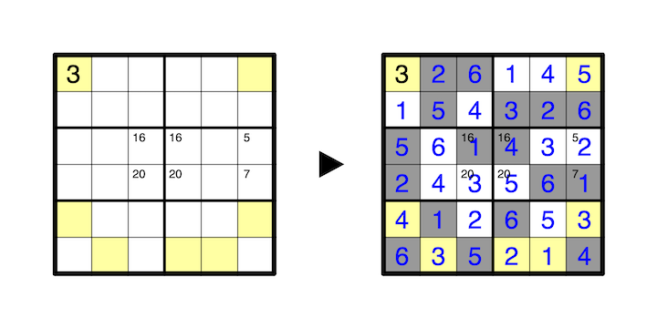

Some cells in the grid must be shaded. A number in a colored cell indicates the total count of shaded cells in orthogonally connected groups sharing an edge with that cell. Colored cells are not shaded.
No number may repeat in any orthgonally connected group of shaded or unshaded cells, and a cell with a number in its top left corner indicates the sum of the numbers in its orthogonally connected group. A group may contain any number of clues, possibly zero.
A 1-6 example with a given number is provided:
